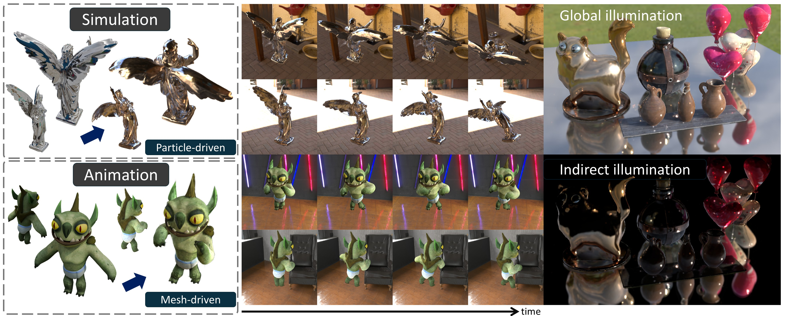
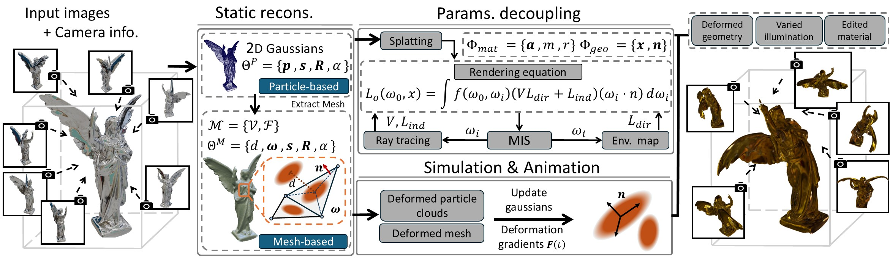
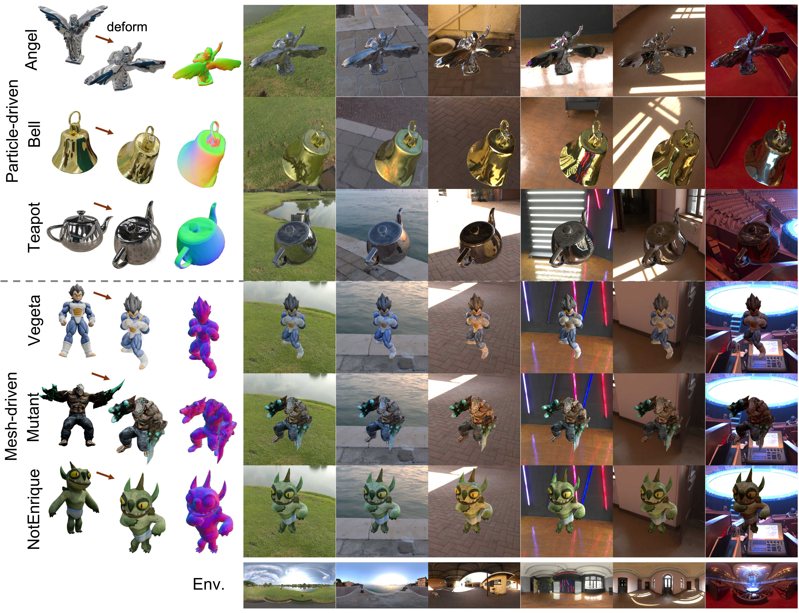
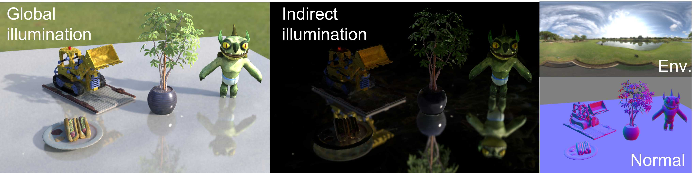
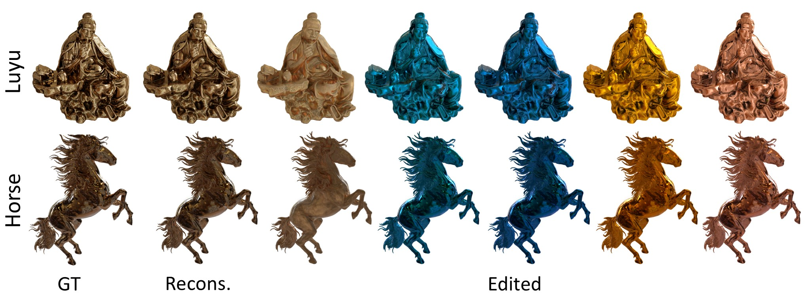

Abstract

Gaussian splatting (GS) has garnered significant attention in VR/AR and digital content creation due to its explicit parameterization and efficient rendering capabilities. However, existing GS-based methods for deformable objects face two key limitations: (i) illumination is erroneously baked into textures, causing physically inconsistent responses under dynamic deformations and lighting changes; (ii) snapshot-based reconstruction restricts post-reconstruction material editing. To address these challenges, we propose Deformable and Relightable GS (DR-GS), a unified Gaussian framework that integrates physically-based inverse rendering, relighting, and deformation-aware manipulation. Through explicitly disentangling geometry, illumination, and material representations, DR-GS overcomes the limitations of static snapshots, resolving unrealistic appearance under varying conditions while enabling post-reconstruction parameter editing. Extensive experiments show that DR-GS achieves leading visual quality across static reconstruction, dynamic deformation, and relighting, reliably preserving reflections and specular highlights on glossy surfaces. It further establishes a fully decoupled geometry-illumination-material pipeline, enabling high-quality 3D asset creation and comprehensive post-editing.
Method

Overview of DR-GS. Our framework consists of three stages: (i) Static reconstruction: building initial 2D Gaussians and mesh from calibrated images, with optional mesh-based reinitialization; (ii) Parameters decoupling: generating material (albedo, metallic, roughness) and geometry (position, normal) maps via splatting while solving the rendering equation through MIS and ray tracing; (iii) Dynamic driving: updating Gaussians via deformation gradients between canonical and deformed particle clouds/meshes from physical simulation/animation. Overall, our decoupled geometry–illumination–material framework supports physically plausible rendering under deformations, illumination changes, and material edits with interactive manipulation.
- Unified deformable GS: DR-GS integrates physically-based inverse rendering, relighting, and deformation-driven control in a single Gaussian framework.
- Efficient dynamic rendering: We combine MIS-based Monte Carlo rendering with denoising and mesh-based ray tracing to accelerate relighting under deformation efficiently.
- Editable asset pipeline: A decoupled geometry–illumination–material pipeline enables high-fidelity creation and post-editing of 3D assets for content production and simulation.
Results

The figure demonstrates reconstruction, geometric deformation, and PBR under various illumination conditions using estimated material parameters.

The composed scenes demonstrates DR-GS’s ability to model occlusion-induced shadows and reflections arising from geometric visibility effects.

PBR results with material parameter editing. We present a comparison between DR-GS static reconstruction results and ground truth, along with rendered results after editing the decoupled material parameters.
Multi-view videos
Rows: views (1 / 2 / 3) · Columns: relighting environments
Angel
Bell
Teapot
References
- Tianyi Xie, Zeshun Zong, Yuxing Qiu, Xuan Li, Yutao Feng, Yin Yang, Chenfanfu Jiang. PhysGaussian: Physics-Integrated 3D Gaussians for Generative Dynamics. CVPR, 2024.
- Yutao Feng, Xiang Feng, Yintong Shang, Ying Jiang, Chang Yu, Zeshun Zong, Tianjia Shao, Hongzhi Wu, Kun Zhou, Chenfanfu Jiang, Yin Yang. Gaussian Splashing: Unified Particles for Versatile Motion Synthesis and Rendering. CVPR, 2025.
- Yuan Liu, Peng Wang, Cheng Lin, Xiaoxiao Long, Jiepeng Wang, Lingjie Liu, Taku Komura, Wenping Wang. NeRO: Neural Geometry and BRDF Reconstruction of Reflective Objects from Multiview Images. SIGGRAPH, 2023.
BibTeX
@inproceedings{li2026drgs,
title = {DR-GS: Physically-Based Deformable and Relightable 2D Gaussians},
author = {Li, Jiaxin and Wu, Tong and Wei, Yi and Wu, Tailin and Zhang, Li},
booktitle = {European Conference on Computer Vision (ECCV)},
year = {2026},
}